La empresa creció.
Necesitás ordenar responsabilidades, prioridades y la forma de tomar decisiones.
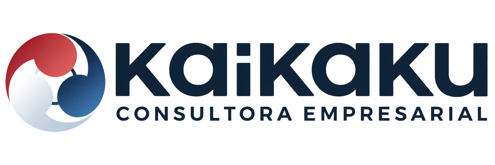
Dirección empresarial y marketing estratégico para empresas que necesitan ordenar su gestión, desarrollar nuevos negocios o fortalecer sus marcas.
Hablemos de tu negocioCUÁNDO PODEMOS ACOMPAÑARTE
Partimos del momento de tu empresa
y de lo que necesita resolver.
Necesitás ordenar responsabilidades, prioridades y la forma de tomar decisiones.
Querés analizar un mercado, desarrollar una unidad de negocio o introducir una marca.
Buscás un posicionamiento claro y una comunicación coherente con el negocio.
Necesitás identificar aplicaciones útiles para tu gestión y evaluar por dónde comenzar.
DOS CAPACIDADES QUE SE COMPLEMENTAN
El alcance se define según
las necesidades de cada empresa.
DIRECCIÓN Y TRANSFORMACIÓN EMPRESARIAL
Acompañamos a propietarios, directorios y equipos gerenciales en decisiones de estrategia y profesionalización.
Diagnóstico, definición de prioridades, plan de acción y seguimiento de decisiones y avances.
MARKETING ESTRATÉGICO Y DESARROLLO DE MARCAS
Integramos análisis de mercado, posicionamiento y creatividad para desarrollar marcas y su presencia comercial.
Definición estratégica de marca, identidad y aplicaciones, contenidos y desarrollo de sus puntos de contacto.
NUESTRA FILOSOFÍA, LLEVADA AL NEGOCIO
Un punto de partida claro.
Un alcance acordado con tu empresa.
Replantear el modelo, una unidad de negocio o el posicionamiento cuando hace falta una transformación profunda.
Observar, evaluar y ajustar procesos y prácticas para sostener el avance.
Conocer el contexto, las necesidades y la información disponible.
Acordar objetivos, alcance y decisiones que requieren atención.
Desarrollar las acciones y herramientas acordadas con el equipo.
Revisar los avances y ajustar el trabajo según lo aprendido.
TRABAJO QUE EXPLICA NUESTRA EXPERIENCIA
Una selección de intervenciones
de nuestra trayectoria.
Acompañar marcas y unidades de negocio, desde el análisis de mercado hasta su desarrollo y posicionamiento.
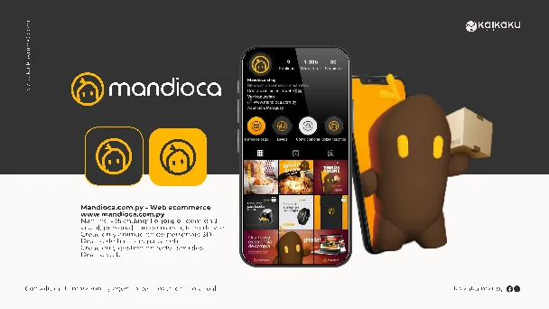
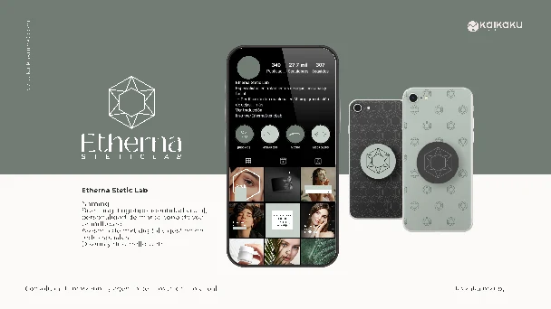
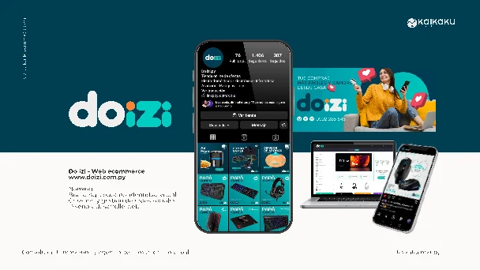
Selección de trabajos realizados en distintas etapas de nuestra trayectoria. Explorá las piezas y aplicaciones en el portfolio.
LAS PERSONAS DETRÁS DE KAIKAKU
Dos disciplinas que se encuentran
en la dirección de la consultora.
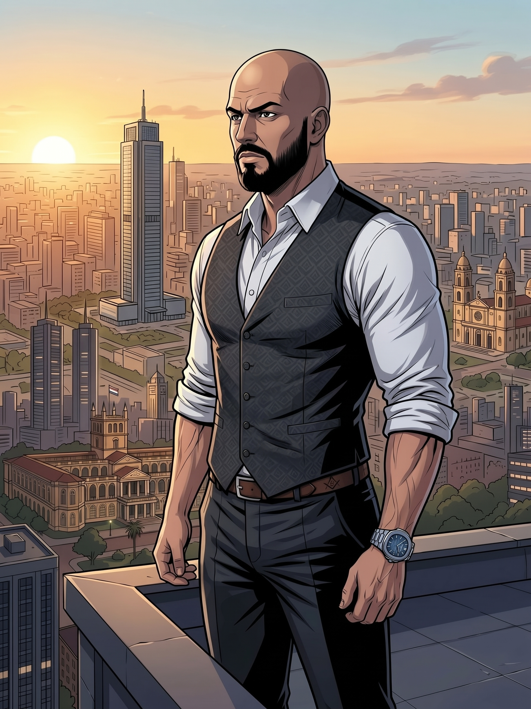
DIRECCIÓN EMPRESARIAL + INTELIGENCIA ARTIFICIALCofundador · Consultor de alta gerencia
Ejecutivo y consultor gerencial con más de 20 años de experiencia en dirección estratégica, empresas familiares, marketing y desarrollo comercial. Su formación internacional integra gestión empresarial, inteligencia artificial, finanzas y negocios digitales. Acompaña decisiones de dirección, profesionalización y desarrollo de negocios.
Experiencia ejecutiva en Grupo Franz, Grupo Yuteña y Tecnocentro, entre otras organizaciones.
Cofundadora · Diseñadora gráfica y creadora de contenido
Diseñadora gráfica y creadora de contenido, con más de 10 años de experiencia trabajando en el desarrollo visual y la comunicación de marcas. Su perfil combina diseño, creatividad y estrategia para construir identidades, desarrollar conceptos y crear contenidos que reflejen la esencia de cada marca y conecten con su público.
Una de sus principales fortalezas es transformar información, conceptos y propuestas de valor en mensajes claros, atractivos y fáciles de comprender, adaptándolos al lenguaje y las necesidades de cada audiencia. En Kaikaku, se desempeña en el área de dirección creativa, participando en el desarrollo de estrategias de marca, identidades visuales y propuestas de comunicación para diferentes proyectos.
Cuenta con un Máster en Diseño y Creación de Personajes 2D por Tech Institute, formación que complementa su perfil profesional y fortalece sus conocimientos en ilustración, narrativa visual y desarrollo de personajes.
EQUIPO ACTUAL
Diseñador gráfico · Editor de video · Filmmaker
Combina diseño gráfico, producción audiovisual y edición de video para crear contenido que conecte con tu audiencia. Es el encargado de dar vida a tus ideas y convertirlas en videos pensados para captar la atención, generar interacción y potenciar su alcance en tus redes sociales favoritas.
NEGOCIO + ESTRATEGIA + CREATIVIDAD
La visión empresarial de Blas y la dirección creativa de Tania se complementan para acompañar el desarrollo de empresas y marcas.
Conversemos sobre tu proyectoPERSONAS QUE SON PARTE DE NUESTRA HISTORIA
Recordamos a quienes formaron parte de Kaikaku y acompañaron distintas etapas de su desarrollo.
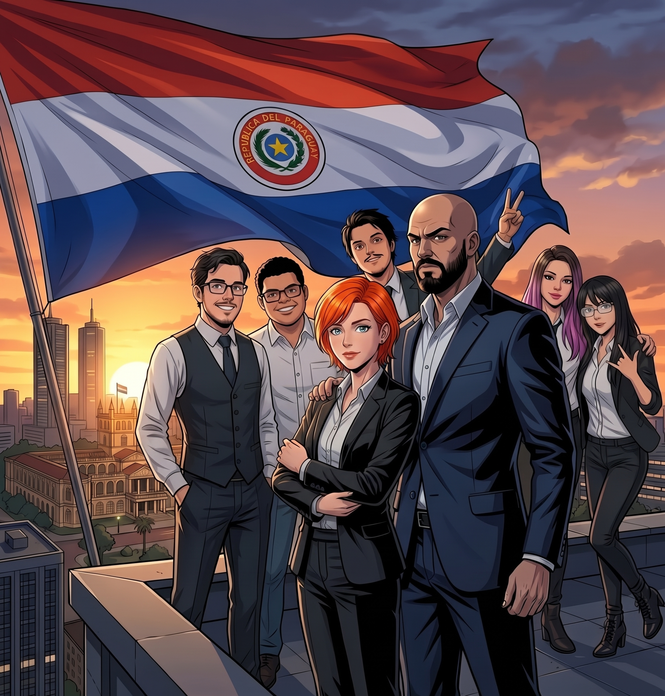
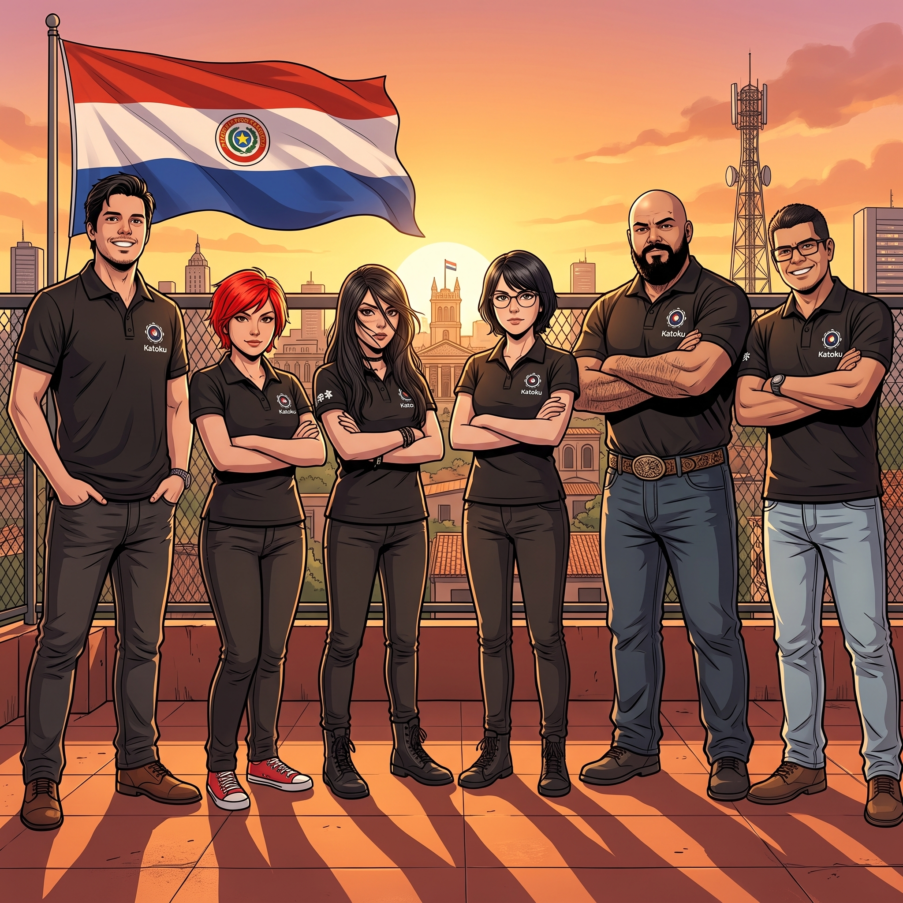
Blas Ojeda Chamorro y Tania Araceli Fernández fundaron Kaikaku uniendo marketing, diseño gráfico e ilustración. La agencia amplió pronto su alcance hacia la gestión empresarial, con énfasis en marketing estratégico.
Con Grupo Yuteña, el trabajo abarcó marcas y unidades de negocio. La llegada de clientes de otros rubros llevó a incorporar siete colaboradores más a los fundadores en aquella etapa.
La actualización académica y la experiencia en nuevos ámbitos ampliaron el enfoque de Kaikaku hacia dirección empresarial, inteligencia artificial aplicada a empresas y desarrollo creativo de marcas.
PORTFOLIO CREATIVO Y DIGITAL
Una mirada al trabajo creativo
de nuestro portfolio.
EXPERIENCIA EN DISTINTOS RUBROS
Una selección de la experiencia
que construimos desde 2016.
Incluye trabajos para empresas, holdings y marcas de sus carteras, realizados en distintas etapas de nuestra trayectoria.
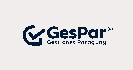
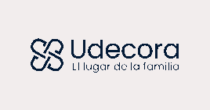
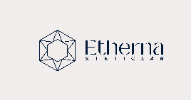
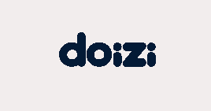
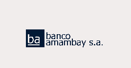
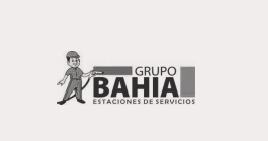
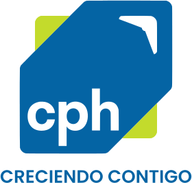
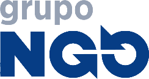
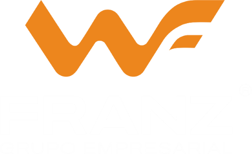
CONVERSEMOS SOBRE TU EMPRESA
Contanos qué necesita resolver tu empresa o tu marca. A partir de ese contexto podemos conversar sobre el acompañamiento adecuado.
+595 992 286 546Blas y Tania dirigen las áreas de consultoría empresarial y marketing de Kaikaku.